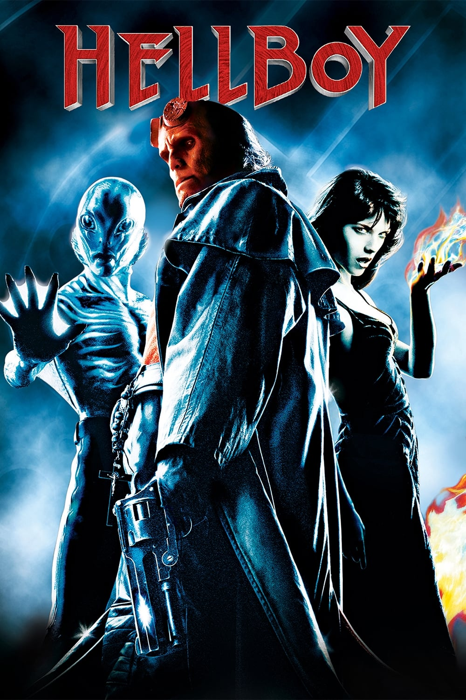

Мировая премьера: 2 апреля 2004
Слоган: Задать злу жару.
Сюжет: Демон Исчадие был рождён в пламени ада и призван в наш мир, чтобы установить на Земле власть зла. Но профессор Брум спас юного демона и воспитал его защитником добра. Теперь Исчадие – агент тайного Бюро исследований и защиты от сверхъестественных сил. При помощи амфибии-телепата Эйба Сапиена и пирокинетички Лиз Шерман он даёт отпор рвущимся в наш мир потусторонним тварям. Но вскоре появляется злобный гений, намеренный вернуть Исчадие на тёмную сторону и использовать его силу, чтобы погрузить мир в хаос.
Режиссёр: Гильермо Дель Торо
В основе: Комиксы о Хеллбое (США, выходят с 1993, автор – Майк Миньола)
Серия: Хеллбой
В ролях: Рон Пёрлман, Руперт Эванс, Джон Хёрт
| Рон Пёрлман | Исчадие |
| Руперт Эванс | Джон Майерс |
| Джон Хёрт | Профессор Тревор "Брум" Бруттенхолм |
| Сельма Блэр | Лиз Шерман |
| Джеффри Тэмбор | Доктор Том Мэннинг |
| Карел Роден | Григорий Распутин |
| Даг Джонс | Абрахам "Эйб" Сапиен |
| Кори Джонсон | Агент Клэй |
| Кевин Трэйнор | Юный Брум |
Бюджет: $ 66 млн.
Кассовые сборы в США: $ 60 млн.
Кассовые сборы в мире: $ 99 млн.
Продолжительность: 1 ч. 54 мин.
Рейтинг: 6.9